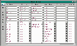

Keystrokes
Click Here to see a screen shot of this menu. 
We will refer to the following fields when configuring a shortcut key or combination:
FIELDS:
Key Name - pulls down into the Key Definitions MenuTO CREATE A SHORT CUTAction Type - pulls down into the Key Action Types Menu
GOPROC - goes to a procedure
DOPROC - executes a procedure
GOMENU - goes to a menu
GOVIEW - goes to a graphical viewProc Name - pull down into the Security Menu listing all the FortnaPlus© system procedures
Menu Name - pull down into the Menu of Menus
Proc Restriction - not often used
Menu Restriction - not often used
View Name - pulls down into the PhViews Menu listing graphical screen views
1. From the Main Menu, select Utility Menu...
2. Select Administrator Utilities...
3. Select KeyStrokes
4. Cursor to the Key Name field. Cursor down to the next empty record.
5. Click the pull down symbol to bring up Key Definitions from which to select. Choose the key or combination set to assign the action to.
6. Press Enter to cause your choice to appear in the Key Name field. Check to be sure your selection is not used in any of the above records as a keystroke can not have more than one short cut function assigned.
7. Arrow to the Action Type field. Click the pull down symbol to bring up Key Action Types from which to select.
8. Highlight your choice and click the pull down symbol causing your choice to appear in the Action Type field.
9. If you have chosen to go to or execute a procedure, arrow to and choose a procedure from the list in the Proc Name field. If you have chosen to go to a menu, arrow to and choose a menu name in the Menu Name field. If you have chosen to go to a view, arrow to and select a view name for the View Name field.
10. Esc and try your keystroke.
Click here to return to top of page.
Copyright © 2001 Fortna Inc. All rights reserved.